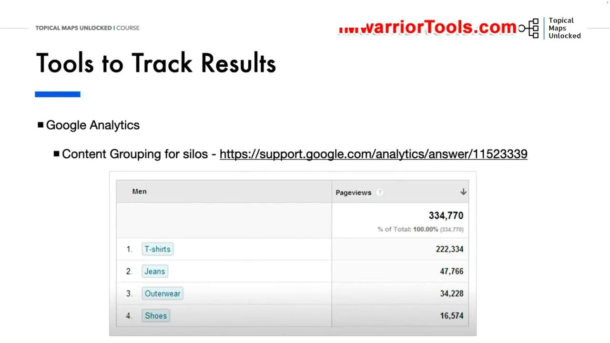
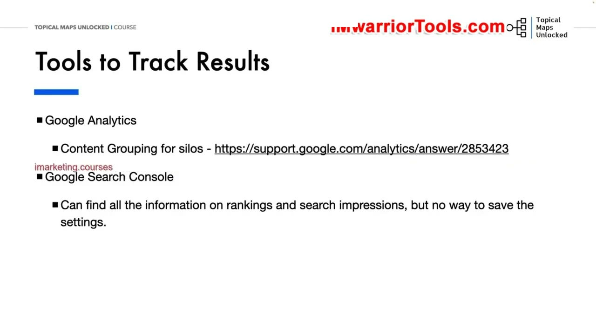
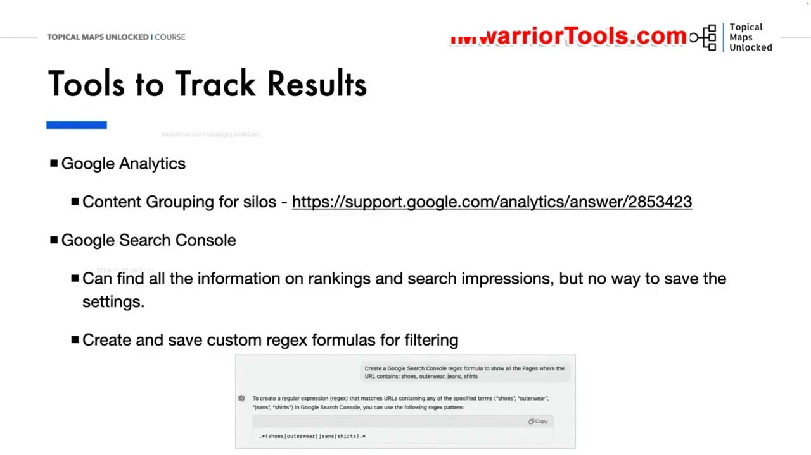
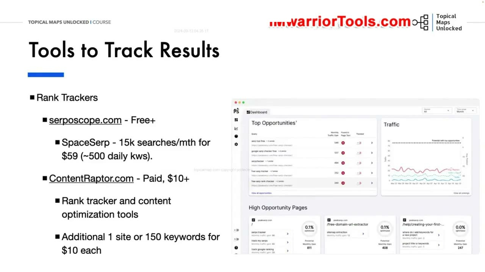

Content Performance Analysis
1. Tầm quan trọng của việc Đo lường và Theo dõi Hiệu suất Nội dung
Trong bài học mở đầu của Học phần Phân tích & Xuất bản (Module 09 & 10), Yoyao tập trung vào một chủ đề mang tính sống còn đối với sự phát triển lâu dài của mọi website: Theo dõi và Đo lường Kết quả Hiệu suất Nội dung (Tracking & Measuring Results).
Sau khi đã dồn rất nhiều nguồn lực để nghiên cứu từ khóa, lập Topical Map, tạo Content Brief và xuất bản hàng chục bài viết, bạn không thể bỏ mặc website mà không theo dõi. Việc đo lường hiệu suất giúp bạn giải đáp những câu hỏi chiến lược tối quan trọng:
- Những bài viết nào và những Silo cụm chủ đề nào đang thực sự thu hút được nhiều lượt truy cập tự nhiên (Organic Traffic) nhất trên toàn trang web?
- Những trang nào đang có thứ hạng cao nhưng tỷ lệ nhấp chuột (CTR) lại thấp do tiêu đề H1 hoặc mô tả meta chưa thực sự thu hút người dùng?
- Cụm chủ đề nào đang bị chững lại hoặc tụt hạng cần phải được bổ sung nội dung mới, tối ưu lại bài viết cũ hoặc gia cố hệ thống liên kết nội bộ để lấy lại vị thế?
Bằng cách theo dõi liên tục và có hệ thống, bạn sẽ biết chính xác nơi nào nên tiếp tục đầu tư nguồn lực mở rộng và nơi nào cần tiến hành tái cơ cấu để tối đa hóa tỷ suất hoàn vốn đầu tư (ROI) cho toàn bộ dự án SEO.

2. Thiết lập Nhóm nội dung (Content Grouping) theo Silo trong Google Analytics 4
Công cụ đầu tiên và cơ bản nhất được Yoyao hướng dẫn là Google Analytics 4 (GA4) với tính năng đặc biệt: Content Grouping (Nhóm nội dung theo Silo):
Thay vì xem xét từng trang URL riêng lẻ một cách rời rạc, tính năng Content Grouping cho phép bạn gom toàn bộ các bài viết thuộc cùng một nhánh Silo trên Topical Map lại thành một nhóm duy nhất (ví dụ: nhóm /dog-food/, nhóm /dog-training/, nhóm /dog-grooming/).
Lợi ích vượt trội của việc nhóm nội dung:
- Bạn có thể nhìn thấy ngay tổng lưu lượng truy cập, số lượt xem trang (Pageviews) và thời gian tương tác trung bình của toàn bộ một nhánh Silo thay vì phải cộng thủ công từng bài viết.
- So sánh trực quan sức mạnh giữa các Silo để xem nhánh chủ đề nào đang mang lại giá trị thương mại lớn nhất và nhận được sự quan tâm nhiều nhất từ độc giả.
- Dễ dàng báo cáo cho cấp quản lý hoặc khách hàng về bức tranh tổng thể của dự án SEO theo từng mảng chuyên môn mà không bị chìm nghỉm trong hàng ngàn dòng dữ liệu URL riêng lẻ.
Việc nhóm nội dung theo Silo phản ánh chính xác cấu trúc kiến trúc thông tin mà bạn đã thiết kế trên Topical Map, giúp việc đánh giá hiệu quả trở nên vô cùng mạch lạc.

3. Khai thác Google Search Console và Ứng dụng Regex tùy chỉnh để Lọc dữ liệu Silo
Bên cạnh GA4, công cụ cung cấp dữ liệu tìm kiếm chân thực nhất chính là Google Search Console (GSC). Tuy nhiên, GSC có một nhược điểm cố hữu: Bạn có thể tìm thấy mọi thông tin về thứ hạng và số lần hiển thị, nhưng giao diện mặc định không cho phép bạn lưu lại các bộ lọc phức tạp.
Yoyao chia sẻ giải pháp chuyên nghiệp để khắc phục hạn chế này: Tạo và lưu trữ các công thức biểu thức chính quy (Custom Regex Formulas):
- Bạn soạn thảo sẵn các đoạn mã Regex lọc đường dẫn URL tương ứng với từng Silo chủ đề (ví dụ lọc tất cả URL chứa
.*dog-food.*hoặc kết hợp nhiều biến thể từ khóa phức tạp). - Lưu các chuỗi Regex này vào một bảng tính quản lý riêng. Mỗi khi cần phân tích một Silo cụ thể trong GSC, bạn chỉ cần sao chép chuỗi Regex tương ứng và dán vào bộ lọc trang (Page filter) của GSC.
- GSC sẽ lập tức hiển thị báo cáo hiệu suất chuyên biệt cho Silo đó: Tổng số lượt nhấp, tổng số lần hiển thị, CTR trung bình và vị trí xếp hạng trung bình của riêng cụm chủ đề mục tiêu.
Kỹ thuật này giúp bạn tiết kiệm hàng giờ thao tác thủ công, loại bỏ sai sót và tạo ra các báo cáo kiểm toán hiệu suất cực kỳ chuẩn xác và chuyên nghiệp cho từng phân nhánh nội dung.

4. Các công cụ theo dõi thứ hạng từ khóa (Rank Trackers): Serposcope, SpaceSerp và ContentRaptor
Để theo dõi sát sao sự biến động vị trí của hàng trăm từ khóa mục tiêu trên SERP, Yoyao giới thiệu 3 giải pháp công cụ theo dõi thứ hạng (Rank Trackers) từ miễn phí đến trả phí chuyên sâu:
- Serposcope (Miễn phí hoàn toàn / Tự host):
- Một phần mềm mã nguồn mở chạy trực tiếp trên máy chủ nội bộ (cổng 6333) của bạn.
- Hoàn toàn miễn phí, không giới hạn số lượng từ khóa và số lượng website theo dõi, cực kỳ phù hợp cho các nhà làm SEO có ngân sách tiết kiệm và muốn tự chủ hoàn toàn dữ liệu của mình mà không lo chi phí hàng tháng.
- SpaceSerp (Giải pháp tiết kiệm chi phí qua ưu đãi trọn đời):
- Cung cấp gói theo dõi khoảng 15.000 lượt tìm kiếm mỗi tháng (tương đương khoảng 500 từ khóa kiểm tra hàng ngày) với mức giá khoảng $59 thông qua các ưu đãi trọn đời (Lifetime Deal) trên AppSumo. Bạn có thể xếp chồng nhiều mã (Stack multiple codes) để mở rộng quy mô theo dõi khi website phát triển lớn mạnh hơn.
- ContentRaptor (Công cụ phân tích và tối ưu hóa nội dung chuyên sâu):
- Một giải pháp trả phí cao cấp (bắt đầu từ $10+) tích hợp đồng thời cả tính năng theo dõi thứ hạng từ khóa và các công cụ tối ưu hóa nội dung bài viết On-page. Bạn có thể dễ dàng bổ sung thêm website hoặc gói 150 từ khóa với chi phí linh hoạt chỉ $10 cho mỗi gói bổ sung.
Việc kết hợp hài hòa giữa Google Analytics, Search Console và một công cụ theo dõi thứ hạng tự động sẽ tạo nên một hệ thống giám sát hiệu suất hoàn chỉnh, giúp bạn luôn chủ động nắm bắt nhịp đập của website và phản ứng kịp thời trước mọi biến động thuật toán.
Nhờ đó, bạn sẽ luôn duy trì được lợi thế cạnh tranh áp đảo và bảo vệ vững chắc thành quả xây dựng thẩm quyền chủ đề của mình.

Nguồn và đối chiếu
- Topical Maps Unlocked 2.0 · 01-Content Performance Analysis (Video bài học chính).
- Bản tiếng Anh không có video riêng cho bài học này; nội dung đối chiếu trực tiếp từ slide và video chính.
- Đối chiếu tài liệu đính kèm: Tài Liệu/Yoyao Hsueh - Topical Maps Unlocked 2.0/10-Analysis Module/01-Content Performance Analysis.pdf.